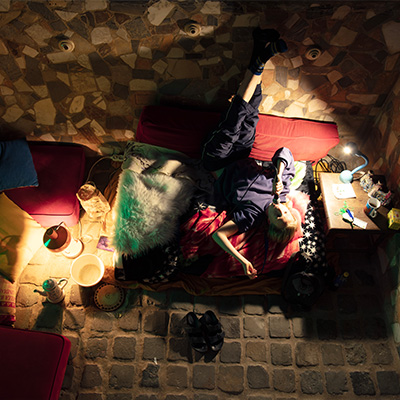

RendezVous Brussels Art Week @ Hectolitre
by Chris-Armel Iradukunda, Davide Paolillo, Gregor Petrikovič, Mélanie Ganino, Maria Stuut, Martina Petrović, Jeremias Pérez Salerno, Ychaï Gassenbauer
For Whom Alienated Figures Sing
Alienated figures sing melancholic birthday songs for childhood dreams. Happy birthday, everyone!
Inside the marble cathedral of Hectolitre, the collective unconscious becomes a mantra of remembrance, refracted through a Fresnel lens. Rivers of ghostly matter dissolve past the edge of human knowledge. We wish we could transmit the weight of time to you, mind to mind, before the trickling sand turns memory into a silica desert.
11/09 Friday 16h - 21h
12/09 Saturday 10h - 22h
13/09 Sunday 13h - 18h
@Reactor, Rue de l'Hectolitre 3, Brussels
Accessibility: For accessibility inquiries, please contact us via direct message to arrange support.
Artists
̃∼ Melanie Ganino’s worldbuilding practice weaves photography performance and community arts to create bridges between knowledge, disciplines and forms of life, imagining other ways of sensing, relating to otherness and inhabiting our environments.
Her presented photographic and installation work gathers traces of an uncertain elsewhere, where past and future blur, and water carries forms of life and matter between arid and humid worlds, toward unknown possibilities of adaptation.
̃
∼ Ychaï Gassenbauer is a Brussels-based audiovisual artist working across animation, video, and performance. Originally from Jerusalem, his multidisciplinary practice explores identity, intimacy, and belief, while questioning the cultural structures that shape them.
Polybiota, video installation
̃
∼ Chris-Armel Iradukunda (b. 1992) is a multifaceted artist born in Burundi, educated as a computer engineer in China. For 8 years, he documented daily walks with an art form that led to exile in Europe: digital photography.
He wears the hats of a dramaturg, actor, performer, coder, hacker, and eyeballs alienhood and smarter-than-human beings. At the 61st Venice Biennale, the Bosnia and Herzegovina pavilion exhibits his guest works, presented in the name of the nation he fled, while absent due to being undocumented by Belgian laws.
Simulation #2 | exhibition.awalkaday.art (2025–2026)
Photographic installation with participatory performance and custom 3D web application software
The photographs on view were taken on a single evening after RendezVous Brussels Art Week 2025, at the close of Simulation #1 — documentation of chalk and spray marks left by visitors across two rooms at Hectolitre over three days. They have not been shown until now.
For Simulation #2, Iradukunda has built software that reconstructs both rooms as a digital space, so the photographs can be hung a second time — on physical walls, and on walls that only exist in a browser, accessible on-site or from anywhere. The marks were made by strangers and kept anonymous for a year. Naming them, live, is this edition's task, shared between the artist and whoever walks in.
̃
∼ Davide Paolillo (1992) is a Brussels-based Italian composer and sound artist. His practice is grounded in direct experimentation with instrument deformations, noisy machines and creative coding.
Performance Title: No Sticks, No-input, Still Drumming
Duration: 20’/30’
Place and time: Reactor 3rd floor / Sun 13th Sept 14h and 16h
Description:
Can a mixer play the drums, or is it the ghost of the drummer?
A no-input mixer is a mixer plugged into itself, screaming. A drum kit without a drummer is a very expensive loudspeaker. In this performance, I connect the two and step back. The drum answers, the mixer takes it personally, and the two of them argue for some time. I mostly turn knobs and take the blame.
̃∼ Jeremias Perez Salerno is an Argentinian musician and sound artist based in Brussels. He explores the universe of musical and no musical sound impressions, and their possible combinations.
In the live performance Soundscape, he creates a sound piece inspired by the presence of the Reactor, the place where he's playing, by the city where we live, and by the music this city proposes everyday to our ears.
̃
∼ Gregor Petrikovič (b. 1995) is a Slovak-British artist and filmmaker based in Brussels. Working across lens-based media and installation, his practice explores subconscious experience, human connection, and the quiet distances between them.
He holds an MA in Photography from the Royal College of Art, where he was a Burberry Design Scholar. His work has been shown at New Contemporaries 2026, Tate Late, IDFA DocLab and Sónar+D Barcelona. He is an alumnus of the ISCP Residency New York and a 2025 FLAMIN Fellow at Film London.
Big-Little (2026) by Gregor Petrikovič
A sphere expands without limit. The dreamer's task is to pierce it with a needle. The harder they try, the faster it grows.
@gregor_petrikovic came across an Instagram post about this dream. Beneath it, 17,000 strangers confirmed they had experienced the same thing - each with a different understanding of what it meant.
The work recreates the dream as a film viewed through a Fresnel lens. What the viewer sees shifts depending on where they stand. The sound is composed around a Shepard tone, an auditory illusion of continuous unresolved ascent.
On view at Hectolitre, RendezVous Brussels Art Week 2026.
̃∼ Martina Petrovic is a Serbian artist and adventurer whose work investigates complexities of emotional states such as: joy, grief, love, displacement – at the intersection of ecological and social crises. Her practice is rooted in visual arts and performance and focuses on rituals: the decomposition of inherited forms and design of new rituals in response to the urgencies of our time. In the past years she has mainly worked in collectives School of love and Borderdi3order. She has been an art coordinator of Hectolitre for the last 4 years.
“Sea legs” is a video installation puzzled from old pieces and new fragments that plays in a loop, same as the question in my mind: What is a mermaid without a sea?
̃
∼ Maria Stuut is a biologist turned artist with an inexplicable fondness for cabbage, working with film, performance, music, and writing. She lets her body wander into encounters, exploring her environment through a personal, lyrical and tragicomic lens.
Saturday 12 September 10h-20h.
For RendezVous @MariaStuut brings back her favourite birthday ritual; singing 10hours of Dido in the empty pool. Feel free to sing along for a few minutes:
My tea's gone cold, I'm wondering why I
Got out of bed at all
The morning rain clouds up my window
And I can't see at all
And even if I could, it'd all be grey
But your picture on my wall
It reminds me that it's not so bad, it's not so bad
∿∿∿∿ Affordable artworks, hopefully a sunny garden, snacks and drinks!
Please bring cash!!
See you soon!!